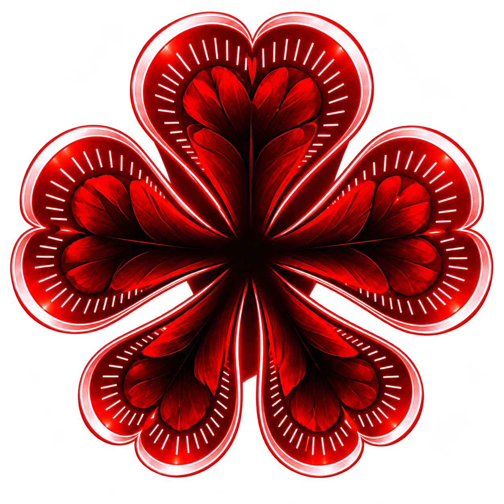

01
Le cœur ouvert
Les Lucioles
Celles et ceux qui refusent de laisser la ville s’éteindre. Réseaux d’entraide, commerces de quartier et secrets bien gardés.
Explorer la faction ↗Serveur roleplay français
Une ville à la lumière crue, des alliances fragiles et des histoires qui refusent de mourir. Trouvez votre place dans la faille.
La ville n’oublie rien
Hollow est un serveur RP pensé pour celles et ceux qui aiment les personnages nuancés, les choix lourds de conséquences et les rencontres qui changent une vie. Ici, chaque rue a une mémoire.
Lire le dossier de la ville ↗
Le cœur ouvert
Celles et ceux qui refusent de laisser la ville s’éteindre. Réseaux d’entraide, commerces de quartier et secrets bien gardés.
Explorer la faction ↗Le poing fermé
Ils connaissent les raccourcis, les dettes et les règles qui ne figurent sur aucun papier. Leur influence s’étend dans l’ombre.
Explorer la faction ↗Hollow, c’est
Pas de scénario imposé : vos décisions font bouger la ville.
Du jeu sérieux, bienveillant et toujours au service du personnage.
Événements, saisons et intrigues pour ne jamais jouer la même journée.
Le prochain chapitre commence ici
Présentez votre personnage, trouvez votre cercle et écrivez quelque chose dont on parlera demain.
Rejoindre le Discord